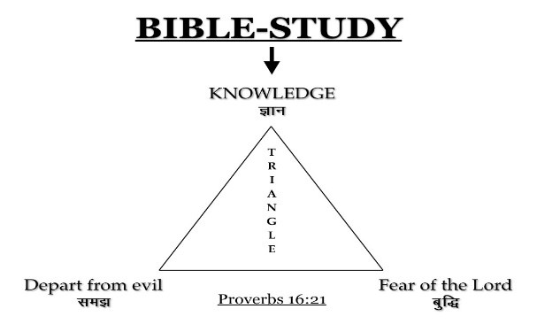
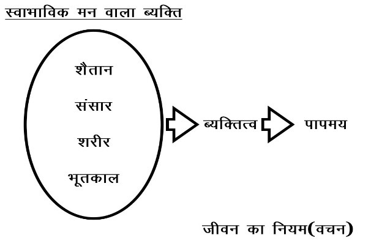
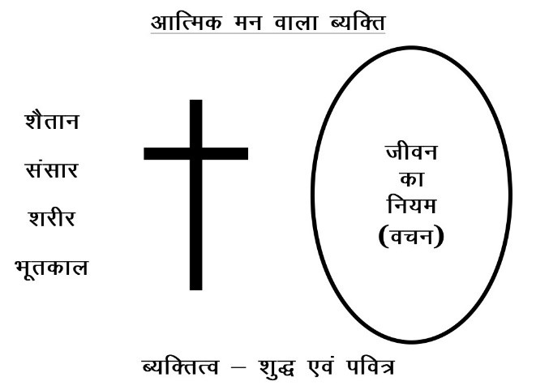

भूमिका
मित्रों, सर्पदंश की घटनायें हमारे भारत देश के शहरों की अपेक्षा ग्रामीण अंचल में होती है, जिसमें हर साल न जाने कितने लोग अपनी जान गवां देते हैं और इस कारण शहरी व्यक्ति को शायद इस विषय की जानकारी न हो, परन्तु गांव का व्यक्ति जानता है कि सामान्यत: जब कभी भी किसी गांव में यदि किसी व्यक्ति को सांप डस लेता है तो तुरंत किसी बैगा, गुनिया या तांत्रिक की खोज होती है, जिससे उस व्यक्ति का जीवन बचाया जा सके । मतलब यह हुआ कि सांप के काटने के बाद ही मंत्रोपचार की आवश्यकता होती है । लेकिन सृजनहार परम् ईश्वर के जीवन की पुस्तक ‘अमृत-वाणी’ में इसके विपरीत बात लिखी है -
‘यदि मंत्र से पहले सर्प डसे तो मंत्र पढ़ने वाले को कुछ भी लाभ नहीं...’
सभोपदेशक 10:11
जब मैंने एक ग्रामीण भाई से यह बात कही, तो उसने हंसते हुए कहा – यह कैसी उल्टी बात है ! और मेरी बात वहीं समाप्त हो गई । पर जब मैंने उसी पुस्तक में एक और बात लिखा देखा कि-
‘मेरे विचार और तुम्हारे विचार एक समान नहीं है, न तुम्हारी गति और मेरी गति है क्योंकि मेरी और तुम्हारी गति में और मेरे और तुम्हारे सोच विचारों में, आकाश और पृथ्वी का अन्तर है’ ।।
यशायाह 55:8-9
तब मुझे उस भाई की याद आई, जिसने कहा था – यह कैसी उल्टी बात है !! इसी पुस्तक के नीति-वचनों में लिखा है -
‘...अपनी दृष्टि में बुद्धिमान न होना, यहोवा का भय मानना और बुराई से अलग रहना...’
नीति-वचनों 3:7-8
‘...ऐसा भी मार्ग है जो मनुष्य को ठीक देख पड़ता है, परन्तु उसके अंत में मृत्यु ही मिलती है...’
नीति-वचनों 14:12
इस संसार में केवल एक ही पुस्तक है ‘अमृत-वाणी’ अर्थात सृजनहार द्वारा दिया गया जीवन का नियम जो यह बताती है कि ‘शैतान’ ही वह सांप है जो परमेश्वर की रचना अर्थात सम्पूर्ण मानवजाति को पापरूपी विष से भर देता है, और अनन्त मृत्यु अर्थात आग की झील या नरक कुण्ड तक पहुंचाता है ।
इसीलिए सन्त पौलूस लिखा -
‘वे सब के सब पाप के वश में है । जैसा कि लिखा है – कोई भी धर्मी नहीं, एक भी नहीं । कोई समझदार नहीं, कोई परमेश्वर का खोजने वाला नहीं । सब भटक गए है, सब के सब निकम्मे बन गए, कोई भलाई करने वाला नहीं, एक भी नहीं । उनका गला खुली हुई कब्र है, उन्होंने अपनी जीभों से छल किया है, उन के होठों में सांपों का विष है, और श्राप और कड़वाहट से भरा है । उन के पांव लोहू बहाने को फुर्तीले हैं । उन के मार्गों में नाश और क्लेश है । उन्होंने कुशल का मार्ग नहीं जाना । उनकी आंखों के साम्हने परमेश्वर का भय नहीं ।
3:9-18
उसने यह भी लिखा— इसलिये जब हम पर ऐसी दया हुई कि हमें यह सेवा मिली, तो हम हियाव नहीं छोड़ते। परन्तु हम ने लज्ज़ा के गुप्त कामों को त्याग दिया और न चतुराई से चलते और न परमेश्वर के वचन में मिलावट करते हैं, परन्तु सत्य को प्रगट करके, परमेश्वर के साम्हने हर एक मनुष्य के विवेक में अपनी भलाई बैठाते हैं। परन्तु यदि हमारे सुसमाचार पर परदा पड़ा है, तो यह नाश होने वालों ही के लिये पड़ा है। और उन अविश्वासियों के लिये, जिन की बुद्धि को इस संसार के ईश्वर ने अन्धी कर दी है ताकि मसीह जो परमेश्वर का प्रतिरूप है, उसके तेजोमय सुसमाचार का प्रकाश उन पर न चमके ।
2 कुरिन्थियों 4:1-4
प्रभु यीशु ने कहा- यदि तुम मेरे वचन में बने रहोगे, तो सचमुच मेरे चेले ठहरोगे । और सत्य को जानोगे और सत्य तुम्हें स्वतंत्र करेगा।
यूहन्ना 8:31-32
‘...इसलिए तुम हमारे द्वारा यह सीखो, कि लिखे हुए से आगे न बढ़ना...’
1 कुरिन्थियों 4:6
उपरोक्त संदर्भों के आईने में, अनेक वर्षों की सेवकाई के दौरान हमने यह पाया कि ये निरीह मानव, अज्ञानतापूर्वक अंधकार की शक्ति अर्थात पाप में डालने वाले शैतान से लड़ते हुए हार जाता है । कारण, यह कि उसे उस मंत्र का ज्ञान ही नहीं है, जो इस सर्पदंश से बचाने की शक्ति रखता है, और यही बात है जो जीवन के नियम की पुस्तक में हमने देखा था कि –
‘‘यदि मंत्र से पहले सर्प डसे तो मंत्र पढ़ने वाले को कुछ भी लाभ नहीं...’’
सभोपदेशक 10:11
और वह मंत्र है ‘अमध्यांचि’ अर्थात अध्ययन, मनन, ध्यान एवं चिन्तन ।। किसका ??
अमृत-वाणी अर्थात जीवन के नियम का, जिसे सबके सृजनहार परमेश्वर ने जीवन के लिए दिया है । परमेश्वर जीवन देता है और शैतान मृत्यु तक पहुंचाता है, पर चुंकि यह बात केवल परमेश्वर द्वारा दिये गये जीवन के नियम की पुस्तक में लिखा है, इस कारण शैतान हर संभव प्रयास करके सारी मानव जाति को इस पुस्तक से दूर रखता है । जबकि परीक्षा के समय में हमारे प्रभु यीशु ने जो लिखा है, वही किया और शैतान पर जय पाया । ध्यान देने योग्य बात यह है कि परमेश्वर पिता का एकलौता पुत्र होने पर भी सांप को अर्थात शैतान को उसे डसने की पूरी छूट थी, ताकि वह जो हमारा प्रभु है, हमारे लिए आदर्श ठहरे।
अत: मसीह में प्रिय भाईयों एवं बहनों, उस अनन्त मृत्यु अर्थात नरक से बचना है, तो आज ही से इस मंत्रजाप अर्थात परम् परमेश्वर के जीवन के नियमों का अध्ययन, मनन, ध्यान एवं चिन्तन के विषय में सीखें क्योंकि ये चारों क्रियाएं एक सी लगती है पर एक है नहीं । ‘अमध्यांचि’ नामक यह पुस्तिका निश्चित रूप से उन सभी लोगों की अनन्त मृत्यु से रक्षा करेगा, जो अनन्त जीवन के अभिलाषी है ।
भाई शेखर नंद
अध्ययन
वर्तमान में पूरे विश्व की अध्ययन प्रणाली दो भागों में बंटी हुई है । प्राथमिक रूप से सामान्यत: हर मनुष्य एक सीमित उम्र तक शिक्षा ग्रहण करता है, तत्पश्चात वह व्यावसायिक शिक्षा या प्रशिक्षण प्राप्त करता है । सामान्यत: शिक्षा के साथ अभ्यास कम होता है, परन्तु प्रशिक्षण में सीखने के साथ-साथ अभ्यास आवश्यक एवं अधिकतम होता है और तभी वह किसी भी कार्य के योग्य गिना जाता है । ठीक यही अध्ययन प्रणाली जीवन के नये नियम के युग में अनन्त जीवन के अभिलाषियों के लिए भी परम् ईश्वर का वचन प्रगट करता है । नये नियम के अनुसार जीवन के एक मोड़ तक हर मनुष्य एक विद्यार्थी की तरह वचन की शिक्षा ग्रहण करता है, पर जिस दिन उसका नया जन्म होता है वह चेलों की तरह सीखने और व्यावहारिक जीवन में एक उत्कृष्ट मसीही की नाईं जीवन जीने का अभ्यास करने लगता है और परमेश्वर के लिए आदर का पात्र ठहरता है। नया नियम बताता है -
बालकपन से पवित्र शास्त्र तेरा जाना हुआ है, जो तुझे मसीह पर विश्वास करने से उद्धार प्राप्त करने की बुद्धिमान बना सकता है । हर एक पवित्र शास्त्र परमेश्वर की प्रेरणा से रचा गया है और उपदेश और समझाने और सुधारने धर्म की शिक्षा के लिए लाभदायक है ताकि परमेश्वर का जन सिद्ध बने और हर एक भले काम के लिए तत्पर हो जाये ।
तीमुथियुस 3:15-17
विश्वास के आने से पहले व्यवस्था की आधीनता में हमारी रखवाली होती थी। इसलिए व्यवस्था मसीह तक पहूंचाने को हमारा शिक्षक हूई है कि हम विश्वास से धर्मी ठहरें । परन्तु जब विश्वास आ चुका, तो अब हम शिक्षक के आधीन न रहे।
गलतियों 3:23-25
पर अब जो तुम परमेश्वर को पहिचान लिया वरन परमेश्वर ने तुमको पहिचान लिया, तो उन निर्बल और निकम्मी आदि शिक्षा की बातों की ओर क्यों फिरते हो। तुम दिनों, महिनों, नियत समयों और वर्षों (साप्ताहिक, मासिक, वार्षिक सभाओं, महासभाओं एवं त्यौहारों) को मानते हो।’
गलतियों 4:9-10
उपरोक्त संदर्भ बाईबल अध्ययन को दो भागों में विभाजित करती है—
- प्रथम भाग में वचन की प्रारम्भिक शिक्षा जो विश्वास के आने तक हमारी रखवाली करती है, जिससे एक मनुष्य त्यौहारों, पर्वों एवं सीमित सभाओं तक कार्यकारी होता है तथा उद्धार एव शैतान पर विजय की ओर से निश्चिंत रहता है ।
- द्वितीय भाग में उद्धार प्राप्त करने (विश्वास के आने या नया जन्म प्राप्त करने) के बाद का प्रशिक्षण जिसमें प्रतिदिन के जीवन में वह धर्म की शिक्षा प्राप्त करता, अभ्यास करता एवं भले कामों के लिए तत्पर रहता है एवं उद्धार के मार्ग में बढ़ता जाता है, यदि हम चारों सुसमाचारों का अवलोकन करे तो पायेंगे कि हमारे प्रभु मसीह से सीखने वालों को विद्यार्थी नहीं पर चेले कहा गया है । और तब चेले होने की अजीब शर्तें थी ।
जो अपना सब कुछ न त्याग दे, वह मेरा चेला नहीं हो सकता!!
यह बात शायद उन दिनों के लिए लोगों के बहुत कठिन रही होगी, परन्तु वर्तमान में यह बहुत आसान है । कारण उन दिनों में सीखने वालों को हर समय और हर जगह यीशु के साथ-साथ रहना पड़ता था। क्योंकि वे उसकी वाणी से सीखते थे और इस तरह उन्हें यीशु से सीखने के लिए सब अपना सब कुछ त्यागना पड़ता था। पर आज उनकी पूरी शिक्षाऐं लिखित में, जीवन की पुस्तक के रूप में हमारे पास है, जिसे हम कभी भी और कहीं भी पढ़कर या सुनकर सीख सकते हैं।
ध्यान देने योग्य बात यह है कि जिसका नया जन्म नहीं हुआ, वह बाईबल अध्ययन नियमित समय एवं निर्धारित जगह पर ही एक विद्यार्थी की तरह करता है । परन्तु जैसे ही किसी का नया जन्म होता है, उस के बाईबल अध्ययन की निर्धारित जगह एवं नियमित समयों की सीमा टूट जाती है एवं नये-नियम के चेलों की तरह वह हर समय, हर जगह अध्ययन के लिए लालायित रहता है। इस तरह नया जन्म पाया हुआ व्यक्ति विद्यार्थी नहीं, अपितु चेला ठहरता है । वह फिर सण्डे स्कूल, रविवारीय आराधना, वार्षिक सम्मेलनों एवं त्यौहारों तक सीमित नहीं रहता वरन इनके साथ-साथ सीखना एवं अभ्यास करना उसकी दिनचर्या में शामिल हो जाता है ।
तीमुथियुस को पौलुस लिखा- ‘पढ़ने, उपदेश करने और सिखाने में लौलीन रह । उन बातों को सोचता रह, ताकि तेरी उन्नति सब पर प्रगट हो । अपनी और अपने उपदेश की चौकसी कर। इन बातों में स्थिर रह क्योंकि यदि ऐसा करता रहेगा, तो तू अपने और अपने सुनने वालों के लिए भी उद्धार का कारण होगा।
1 तीमुथियुस 4:13-16
निश्चित रूप से यह एक आश्चर्यजनक परिवर्तन है कि जैसे ही एक व्यक्ति नये जन्म के अनुभव में आता है, वह शांत रह नहीं सकता । या तो वह सीखता रहता या सिखाता रहता है । यह अद्भुत बात हमने अपने नये जन्म के बाद प्राप्त अनुभवों से जाना है । परम् ईश्वर का वचन कहता है -
मनुष्य का ज्ञान रहित रहना अच्छा नहीं है।
नीतिवचन 19:2
सब मनुष्य पशु सरीखे ज्ञान रहित है।
यिर्मयाह 10:14
मेरे ज्ञान के न होने से मेरी प्रजा नाश हो गई।
होशे 4:6
यहोवा की पुस्तक से ढूंढ कर पढो़।
यशायाह 34:16
इन वचनों से प्रेरित होकर नया जन्म के अनुभव के बाद मैं बिरीया (प्रेरितों 17:11) के लोगों की तरह प्रतिदिन पवित्र शास्त्र का अध्ययन करता था कि ये बातें यों ही है या नहीं और परमेश्वर के ज्ञान में धीरे-धीरे आगे बढ़ता जाता था । कुरिन्थियों की पत्री के पहले अध्याय में लिखा है- मैं ज्ञानवानों के ज्ञान को नाश करूंगा। दूसरे अध्याय में पौलुस कहता है— हे भाईयों, जब मैं परमेश्वर का भेद सुनाता हुआ तुम्हारे पास आया, तो वचन या ज्ञान की उत्तमता के साथ नहीं आया। तीमुथियुस को अपनी पहली पत्री में उसने लिखा—जिस ज्ञान को ज्ञान कहना भूल ही है, उसके अशुद्ध बकवाद और विरोध की बातों से परे रह ।
मैंने अपने मन में कहा कि जब ज्ञान का कोई मूल्य नहीं, तो फिर क्यों अध्ययन करें और तब उस आत्मा ने जो मेरा शिक्षक है, मेरे अध्ययन को नया रूप दिया। उसने मुझे याकूब की पत्री से समझाया कि आखिर पौलूस ने ज्ञान के विषय में ऐसा क्यों कहा । लिखा है—
तुममें ज्ञानवान और समझदार कौन है जो ऐसा हो वह अपने कामों को अच्छे चालचलन और नम्रता सहित प्रगट करे जो ज्ञान से उत्पन्न होती है । पर यदि तुम अपने मन में कड़वी डाह और विरोध रखते हो, तो सत्य के विरोध में घमण्ड न करना और न झूठ बोलना । यह ज्ञान वह नहीं जो ऊपर से उतरता है, पर सांसारिक और शारीरिक और शैतानी है । इसलिए कि जहां डाह और विरोध होता है, वहां बखेड़ा और हर प्रकार का दुष्कर्म भी होता है । पर जो ज्ञान ऊपर से आता है, वह पहिले तो पवित्र होता है, फिर मिलनसार, कोमल और मृदुभाव और दया और अच्छे फलों से लदा हुआ और पक्षपात रहित होता है।
याकूब 3:13
इन शब्दों के साथ वह आत्मा कह रहा था- डाह और विरोध के साथ परमेश्वर का ज्ञान शारीरिक, सांसारिक और शैतानी है जिनसे कोई लाभ नहीं, परन्तु अच्छे चालचलन और नम्रता सहित ज्ञान ही ईश्वरीय ज्ञान है ।
इसी ज्ञान के विषय में पौलुस ने लिखा– हम भी तुम्हारे लिए यह प्रार्थना करने और बिनती करने से नहीं चूकते कि तुम सारे आत्मिक ज्ञान और समझ सहित परमेश्वर की इच्छा की पहिचान में परिपूर्ण हो जाओ। कुलुस्सियों 1:9 नीतिवचन 16:21 में लिखा है- जिसके हृदय में बुद्धि है, वह समझ वाला कहलाता है और मधुरवाणी के द्वारा ज्ञान बढ़ता है।
अय्युब भेद खोलता है कि- देख प्रभु का भय मानना यही बुद्धि है, और बुराई से दूर रहना यही समझ है।
अय्युब 28:28
फिर नीतिवचन 2:10 में लिखा है कि- बुद्धि तो तेरे हृदय में प्रवेश करेगी और ज्ञान तुझे मनभाऊ लगेगा।
मतलब यह हुआ कि ‘बुद्धि’ अर्थात् परमेश्वर के भय का हृदय में प्रवेश करने से, एक व्यक्ति परमेश्वर के वचन का अध्ययन करने के के द्वारा परमेश्वर का वास्तविक ‘ज्ञान’ प्राप्त करता है । परिणाम स्वरूप उसे ‘समझ’ प्राप्त होती है कि अब बुराई से दूर रहने का लगातार अभ्यास ही बाईबल अध्ययन है या यूं कहें कि अध्ययन एक त्रिकोणिय कार्य है, जिसके द्वारा ज्ञान, बुद्धि और समझ की प्राप्ति होती है । जैसे एक कोण के नहीं होने पर त्रिकोण नहीं बन सकता वैसे ही ज्ञान, बुद्धि और समझ में से किसी एक के जीवन में नहीं होने पर हमारा अध्ययन वचन के प्रकाश में अधुरा है ।

अतएव प्रियो, आईये हम सब मिलकर अपनी बाईबल अध्ययन का अवलोकन करें। यदि आपका नया जन्म नहीं हुआ है अर्थात् चेलों की नाई हर समय व हर जगह सीखने की लालसा यदि आप में नहीं है, तो प्रार्थना करें कि वचन के पठन या सूनने के दौरान 1पतरस 1:23 के अनुसार आपका नया जन्म हो, जिससे आपके भीतर नये जन्में बालक की तरह निर्मल आत्मिक दूध के लिए लालसा उत्पन्न हो ।
1पतरस 2:2
अमध्यांचि के प्रथम शब्द ‘अध्ययन’ का लगातार अभ्यास आपको एक दिन उस आनन्द तक पहूंचायेगा, जहां वचन के अध्ययन से परमेश्वर के विषय का ज्ञान बढ़ता है । परमेश्वर के ज्ञान के साथ हृदय में परमेश्वर का भय बढ़ता है एवं परमेश्वर के भय अर्थात् बुद्धि के बढ़ने से एक व्यक्ति में समझ अर्थात् बुराई से दूर रहने का स्वभाव भी बढ़ता है और एक मनुष्य को अध्ययन का यह त्रिकोण बुराई से दूर करते हुए शुद्धता, पवित्रता एवं सिद्धता की ओर अग्रसर करता जाता है ।
मनन
मनन का मूल शब्द है मन- और मन के विषय में हमारे प्रभु यीशु मसीह ने कहा था कि जो मनुष्य में से निकलता है वही मनुष्य को अशुद्ध करता है । क्योंकि भीतर से अर्थात् मनुष्य के मन से बुरी बुरी चिन्ता, व्यभिचार, चोरी, हत्या, परस्त्रीगमन, लोभ, दुष्टता, छल, लुचपन, कुदृष्टि, निन्दा, अभिमान और मुर्खता निकलती है । ये सब बुरी बातें भीतर ही से निकलती है और मनुष्य को अशुद्ध करती है।
मरकुस 7:20-23
- भला मनुष्य अपने मन के भले भण्डार से भली बातें निकालता है और बुरा मनुष्य अपने मन के बुरे भण्डार से बुरी बातें निकालता है।
लूका 6:45
मत्ती 7:17-20 प्रभु ने समझाया कि- हर एक अच्छा पेड़ अच्छा फल लाता है और निकम्मा पेड़ बुरा फल लाता है । अच्छा पेड़ बुरा फल नहीं ला सकता और निकम्मा पेड़ अच्छा फल नहीं ला सकता है। उत्पत्ति 8:2 हमें बताता है कि- मनुष्य के मन में बचपन से जो कुछ उत्पन्न होता है, सो बुरा ही उत्पन्न होता है।
पवित्र शास्त्र के अध्ययन से मनुष्य के मन में धर्म का बीज बोया जाता है, ताकि उसके भीतर जीवन का वृक्ष लग सके ।
नीतिवचन 3:18
सृष्टि के आरंभ से ही परमेश्वर पिता ने बताया था कि ऐसा भी वृक्ष है जिसमें भले और बुरे के ज्ञान का फल लगता है और आदम व हव्वा को सख्त हिदायत दी गई थी कि तुम सब वृक्षों के फल खा सकते हो पर भले और बुरे के ज्ञान का फल कभी न खाना । मैंने ढूंढ़ने का प्रयास किया आप भी ढूंढिए, तो पाएगें कि ऊपर लिखित बाईबल के पद्यांशों के अनुसार इस पृथ्वी पर मनुष्य का मन ही भले और बुरे के ज्ञान का वह वृक्ष है जिसके फल खाना मनुष्य के लिए वर्जित है । पर, हाय ! उन मनुष्यों पर जिनका शारीरिक जीवन इसी वृक्ष पर आधारित है । वे जानते हैं कि मन तो सब वस्तुओं से अधिक धोखा देने वाला होता है, फिर भी अपने मन के अनुसार ही सब काम करते हैं । आज हर मनुष्य की दशा भले और बुरे के ज्ञान के पेड़ की सी दिखाई देती है ।
रोमियों की पत्री में एक मुनष्य के मन की दशा कुछ इस तरह प्रगट होती है- इच्छा तो मुझमें है, पर भले काम मुझ से बन नहीं पड़ते ।
7:14
इसीलिए यीशु ने आरम्भ में ही कहा- मन परिवर्तन करो ।
यहेजकेल 36:26 में लिखा है- मैं तुमको नया मन दूंगा ।
पौलुस कहता था- पुरानी बातें बीत गई, देखो वे सब नई हो गई है । 2 कुरिन्थियों 5:17 अर्थात् पुरानी यानि बचपन से उत्पन्न होने वाली बुराई समाप्त हुई और मन के भण्डार से सिर्फ भलाई अर्थात् नई बातें प्रगट होती है और अब अच्छा पेड़ बुरा फल नहीं ला सकता । पर यह सब होता कैसे है
नीतिवचन 4:23 में लिखा है- सबसे अधिक अपने मन की रक्षा कर, क्योंकि जीवन का मूल स्त्रोत वही है। यही प्रक्रिया अर्थात अपने मन की रक्षा करना ही मनन है ।
मन की रक्षा किनसे ?
जीवन का नियम कहता है मनुष्य का मन एक भण्डार है । मन में कहीं से कुछ आता है और व्यवहार के रूप में बाहर आता है एवं उसके व्यवहार से ही उसके व्यक्तित्व या चरित्र का निर्माण होता है । आईये देखें कि वे कौन से स्रोत है, जिनके कारण हमारे मन में बुरी एवं भली बातों का फल लगता है, ताकि हम मनन अर्थात बुरी बातों से मन की रक्षा कर सके ।
-
शैतान - मन में बुरी बातें डालता है ।
प्रेरितों 5:3
-
संसार - जो मनुष्य को परमेश्वर का शत्रु बनाता है।
यूहन्ना 4:3, 1 यूहन्ना 2:15
-
शरीर - परमेश्वर के प्रति मन में विद्रोह उत्पन्न करता है।
प्रकाशितवाक्य 16:11, भ.सं. 55:4
-
भूतकाल - पुरानी यादें (पुराना मनुष्यत्व) मन को परमेश्वर के मार्ग से विचलित करती है।
गिनती11:5 , भ.सं. 45:10, फिलि. 3:5
-
वचन - मन में भले कामों की इच्छा उत्पन्न करती है।
फिलि- 2:13, 2तीमुथियुस 3:16-17
मनुष्य के मन के ये 5 स्रोत है जिसमें चार के द्वारा बुरी और केवल एक के द्वारा भली बातें मन के भीतर प्रवेश करती है । यदि मनुष्य जाति के व्यवहार का मुल्यांकन किया जावे, तो पवित्र बाईबल की दृष्टि में सारी मानव जाति तीन प्रकार के मन वाले लोगों में विभाजित होगी:

स्वाभाविक मन वाले लोग- जिनके मन पर शैतान, संसार, शरीर और पुरानी बातों का पूर्ण अधिकार होता है और वे पूरी तरह इनके अधीन होते हैं और फलस्वरूप बचपन से ही उनके व्यवहार में अनाज्ञाकारिता और बुराई परिलक्षित होती है । उनके मनों तक परमेश्वर का वचन आता तो है, पर जगह नहीं पाता ।

-
शारीरिक मन वाले लोग- जिनके मनों में शैतान, संसार, शरीर, भूतकाल एवं परमेश्वर का वचन, ये पांचों अधिकार जताते हैं। परन्तु बुरी बातों के स्त्रोत के बहुमत के कारण आधीनता उन्हीं की होती है । मन में अच्छाई जरूर रहती है, पर व्यवहार से बुराई प्रगट होती है । इसी कारण यिर्मयाह 17:5 कहता है कि मन तो सब वस्तुओं से अधिक धोखा देने वाला होता है ।

-
आत्मिक मन वाले लोग- जिनके मन पर शैतान, संसार, शरीर और भूतकाल की बातें पहुंचती तो है, पर उनका अधिकार उनके मन पर से समाप्त हो गया है । यहां तक कि सारे पापों के दाग भी जो लाल और अर्गवानी रंग के थे, यीशु के लहू से धो दिये गये और हृदय लगातार अध्ययन के अभ्यास से, हिम की नाई श्वेत (शांति से पूर्ण) कर दिये गये हैं । परिणाम स्वरूप ऐसे मन वाले मनुष्यों के मन से सदा भले विचार काम से धार्मिकता प्रगट होती है। ऐसा व्यक्ति यदि कभी परीक्षा में गिर भी गया, तो तुरन्त पाप अंगिकार करके प्रायश्चित कर लेता है और धर्मी ठहरता है ।
प्रियो, आज हमें इसी बात पर ध्यान करने की आवश्यकता है कि एक मनुष्य के मन में स्वभाव ही से (बचपन से) पाई जाने वाली बुराईयों (पाप) से छुटकारा कैसे होता है या शैतान, संसार, शरीर एवं पुरानी बातों का अधिकार, हमारे मन से कैसे समाप्त होता है ।
रोमियों की पत्री का छठा अध्याय इस बात को समझाता है लिखा है—
क्या तुम नहीं जानते कि जिसकी आज्ञा मानने के लिए तुम अपने आप को दासों की नाईं सौंप देते हो, उसी के दास हो । चाहे पाप के जिसका अन्त मृत्यु है, चाहे आज्ञा मानने के जिसका अन्त धार्मिकता है । परन्तु परमेश्वर का धन्यवाद हो कि तुम जो पाप के दास थे, तौभी मन से उस उपदेश के मानने वाले हो गये जिसके सांचे में (अध्ययन के द्वारा) ढाले गये और पाप से छुड़ाये जाकर धर्म के दास हो गये। - रोमियों 6:17 (जब तुम पाप के दास थे, तो धर्म की ओर से स्वतंत्र थे)
हम जब पाप के लिये मर गए, तो फिर आगे को उस में क्योंकर जीवन बिताएं। क्या तुम नहीं जानते कि हम जितनों ने मसीह यीशु का बपतिस्मा लिया तो उस की मृत्यु का बपतिस्मा लिया। सो उस मृत्यु का बपतिस्मा पाने से हम उसके साथ गाड़े गए, ताकि जैसे मसीह पिता की महिमा के द्वारा मरे हुओं में से जिलाया गया, वैसे ही हम भी नए जीवन की सी चाल चलें। क्योंकि यदि हम उस की मृत्यु की समानता में उसके साथ जुट गए हैं, तो निश्चय उसके जी उठने की समानता में भी जुट जाएंगे। क्योंकि हम जानते हैं कि हमारा पुराना मनुष्यत्व उसके साथ क्रूस पर चढ़ाया गया, ताकि पाप का शरीर व्यर्थ हो जाए, ताकि हम आगे को पाप के दासत्व में न रहें । - रोमियों 6:2
इसलिए पाप तुम्हारे मरनहार शरीर में राज्य न करे कि तुम उसकी लालसाओं के आधीन रहो और न अपने अंगों को अधर्म के हथियार होने के लिए पाप को सौपों, पर अपने आपको मरे हुओं में जी उठा जानकर परमेश्वर को सौपों और तुम पर पाप की प्रभुता न होगी ।
12-14
क्योंकि उन का अन्त तो मृत्यु है परन्तु अब पाप से स्वतंत्र होकर और परमेश्वर के दास बनकर तुम को फल मिला जिस से पवित्रता प्राप्त होती है और उसका अन्त अनन्त जीवन है।
22
भावार्थ यह है कि हमारे प्रभु के क्रूस पर चढ़ाये जाने, मारे जाने और तीसरे दिन मृतकों में से जिलाए जाने के द्वारा हमारे लिए भी मार्ग खोला कि हम भी पाप के लिए मर कर बपतिस्मा रूपी कब्र के द्वारा जिलाएं जाएं और पाप के दासत्व से छुटकारा प्राप्त करें । यही हुआ भी अर्थात हम में से जितनों ने मसीह में बपतिस्मा लिया, सो पाप से छुट कर धर्मी (आत्मिक मन वाले लोग) ठहरे । सो अब हमारे लिए यह आवश्यकता है कि हम समझें कि आधीनता, उसे अधिकार प्रदान करती है, जिसके हम आधीन हो जाते हैं, उनको हमारे द्वारा दिया गया अधिकार, हम पर शासन करता है । और इसी कारण अधिकारी जो कुछ हमसे कराना चाहे, गुलामों की तरह वही करने को हम मजबूर होते हैं । यही उपरोक्त संदर्भों से पौलुस हम पर व्यक्त करना चाहता है । बुरी बातों के स्त्रोतों से जब भी हमारे मनों में कुछ उत्पन्न हो, हम अपने आप को उन विचारों के आधीन न करें वरन प्रभु यीशु मसीह के नाम से उन्हें अपने भीतर स्थापित होने से रोकें, तभी उनका अधिकार हम पर नहीं होगा । स्मरण करें कि इन्हीं को हमने विश्वास के द्वारा क्रूस पर चढा़या एवं बपतिस्मा लिया है । उसकी दया से नये जन्म के स्नान और उसकी आत्मा से नये बनाये जाने के द्वारा हमारा उद्धार हुआ है ।
तीतूस 3:5
इसी कारण अपने आपको भलाई करने हुए, विश्वासयोग्य सृजनहार के हाथ में सौंप दो।
1पतरस 4:19
हमारे प्रभु यीशु ने ठीक इसी रीति से शैतान की बातों का इंकार किया और परीक्षा में निष्पाप ठहर कर हमारे लिए आदर्श ठहरा, जबकि आदि माता हव्वा इसी बात में असफल रही । याकूब 5:12 में लिखा है कि तुम्हारी बात हां की हां और ना की ना हो कि तुम दण्ड के योग्य न ठहरो ।
हर बात में हर जगह, हर समय अपने मन में आने वाली हर बुरी बात को ना और हर भली बात को हां कहना ही मनन है ।
पांच स्त्रोत है, जिसमें चार के द्वारा बुरी बातें एवं केवल एक के द्वारा भली बातें मन में आती है । अत: आज ही से मनन अर्थात हर बुरी बात को नहीं एवं भली बात को हां कहना आरम्भ कीजिए । इस प्रक्रिया से ही मन परिवर्तित होगा, और कर्म भी बदलेगा और इस तरह मनन के द्वारा आप के पास एक नया मन और एक नई जीवन शैली होगी । आप शायद अवश्य ही अध्ययन करतें हैं । क्या आप मनन करने वाले भी हैं ?
स्मरण रहे जीवन का नियम कहता है— सबसे अधिक अपने मन की रक्षा कर, क्योंकि जीवन का मूल स्त्रोत वही है।
नीतिवचन 4:23
ध्यान
इस संसार में जितने भी आध्यात्मिक दर्शन हैं, सब में ध्यान का विशेष स्थान एवं विशेष उद्देश्य है । अमृत-वाणी अर्थात परमेश्वर के वचन में भी ध्यान का एक महत्वपूर्ण स्थान है । इस संसार के ध्यान का उद्देश्य चाहे जो हो, अनन्त जीवन के नियमों में ध्यान का उद्देश्य बिलकुल ही अलग है । अत: आईये, हम सब मिलकर सीखें कि वचन के आईने में ध्यान क्या है ?
नये नियम की मूल भाषा युनानी में ध्यान के लिए THEOMAI शब्द का प्रयोग किया गया है, जिसका शाब्दिक अर्थ- ‘विशेष उद्देश्य के साथ टकटकी लगाकर देखना’ (Gazing with a purpose) है ।
ध्यान से सम्बन्धित निम्नलिखित बातें परमेश्वर के वचन में लिखी गई है, जिससे हमारे ध्यान का उद्देश्य, विषय वस्तु, समय तथा स्थान निर्धारित होता है-
- मैं तेरे सब कामों पर ध्यान करूंगा।
भजन संहिता 77:12
- मुझे प्राचीनकाल के दिन स्मरण आते हैं, मैं तेरे अद्भुत कामों पर ध्यान करूंगा।
भजन संहिता 143:5
- अपने उपदेशों का मार्ग मुझे बता, तब मैं तेरे आश्चर्य कर्मों पर ध्यान करूंगा।
भजन संहिता 119:27
- जो कोई बुद्धिमान हो, वह इन बातों पर ध्यान करेगा और यहोवा की करूणा के कामों पर ध्यान करेगा।
भजन संहिता 107:43
- मैं तेरे उपदेशों पर ध्यान करूंगा और तेरे मार्गों की ओर दृष्टि करूंगा।
भजन संहिता 119:15
- हाकिम भी बैठे हुए आपस में मेरे विरूद्ध बातें करते थे, परन्तु तेरा दास तेरी विधियों पर ध्यान करता रहा।
भजन संहिता 119:23
- मैं अपने सब शिक्षकों से भी अधिक समझ रखता हूँ, क्योंकि मेरा ध्यान तेरी चितौनियों पर लगा है।
भजन संहिता 119:99
- परन्तु वह तो यहोवा की व्यवस्था से प्रसन्न रहता है और उसकी व्यवस्था पर रात-दिन ध्यान करता रहता है।
भजन संहिता 1:2, यहोशू 1:8
- मेरी रात के एक-एक पहर से पहले खुल गई, कि मैं तेरे वचनों पर ध्यान करुं।
भजन संहिता 119:148
- जब मैं बिछौने पर पडा़ तेरा स्मरण करूंगा, तब रात के एक-एक पहर ध्यान करूंगा।
भजन संहिता 63:6
- इसहाक जो दक्षिण देश में रहता था, सो लहैरोई नाम कुएं से होकर चला आता था और सांझ के समय वह मैदान में ध्यान करने के लिए निकला था।
उत्पत्ति 24:62-63
उपरोक्त संदर्भों से हमें ध्यान के सम्बन्ध में जानकारी मिलती है कि हमें किन बातों पर, कब, कहां और क्यों ध्यान करना चाहिए।
किन बातों पर :-
परमेश्वर के कामों पर ।
परमेश्वर के अद्भुत कामों पर ।
परमेश्वर के आश्चर्य कर्म पर ।
परमेश्वर की करूणा के कामों पर ।
परमेश्वर के उपदेशों पर …
परमेश्वर प्रदत्त विधियों पर ….
परमेश्वर की चितौनियों पर …
परमेश्वर की व्यवस्था पर …
परमेश्वर के वचन पर …
कब ध्यान करना चाहिए—
दिन-रात, विशेषत: रात के एक-एक पहर में।
कहां ध्यान करना चाहिए—
अपने बिछौने पर या इसहाक की नाईं मैदान अर्थात एकान्त में, जहां ध्यान करने में कोई व्यवधान न हो । इन वचनों के अनुसार हम अध्ययन एवं मनन कहीं भी और कभी भी कर सकते हैं, लेकिन ध्यान के लिए विशेष स्थान एवं विशेष समय आवश्यक है, जिससे हमारे ध्यान करने में कोई बाधा न हो ।
यहां तक परमेश्वर के वचन के अनुसार ध्यान के विषय, ध्यान का समय एवं ध्यान का स्थान तो स्पष्ट हुआ, लेकिन ध्यान का उद्देश्य प्रगट नहीं हुआ । इफिसुस में रहने वाले पवित्र और मसीह यीशु में विश्वास लोगों को पौलुस लिखता है
- यह (कलीसिया) उसकी देह और उसकी परिपूर्णता है, जो सब में सब कुछ पूर्ण करता है।
1:23
- क्योंकि हम उसके बनाये हुए हैं और मसीह यीशु में उन भले कामों के लिए सृजे गये, जिन्हें परमेश्वर ने पहले से हमारे करने के लिए तैयार किया है ।
2:10
- क्योंकि परमेश्वर ही है जिसने अपनी इच्छा निमित्त तुम्हारे मन में इच्छा और काम दोनों बातों के करने का प्रभाव डाला है । सब काम बिना कुड़कुड़ाए और बिना विवाद के किया करों।
फिलिपिप्यों । 2:13-14
- लेकिन वर्तमान समय में यह एक भारी समस्या है कि हम मसीहियों की कार्य प्रणाली (सेवकाईयों) में अनगिनत असमानताएं है, जिनके कारण हम कई टुकड़ों में बंटे हुए हैं । लिखा है:--
एक ही देह और एक ही आत्मा, एक ही आशा है, एक ही प्रभु, एक ही विश्वास, एक ही बपतिस्मा और सबका एक ही परमेश्वर और पिता है, जो सब के ऊपर है सब के मध्य में और सब में है।
इफिसियों 4:6
इसका अर्थ यह है कि मसीहीयत की बुनियाद एकता पर है और इसीलिए हमारे प्रभु यीशु मसीह ने भी अपनी याजकीय प्रार्थना (यूहन्ना 17 अध्याय) में बार-बार दोहराया था कि वे हमारी नाईं एक हो ।।
2000 वर्षों के कलीसियाई इतिहास में मसीही एकता के लिए किये गये सारे प्रयास असफल रहे हैं । उस समय कोई कहता था- मैं पौलुस का हूं और दूसरा कि मैं अपुल्लोस का । आज कोई लुथरन का, तो कोई मेनोनाईट का, कोई ब्रदरन है तो कोई पेन्टीकॉस्टल, कोई रोमन कैथोलिक है, तो कोई प्रोटेस्टेंट । हम मसीहियों के बीच में भिन्नताओं का मूल कारण है वे कार्य, जिसे हम परमेश्वर की सेवा में नाम से करते हैं । निश्चित रूप से हमें इसलिए सृजा गया है कि हम उन भले कामों को करें, जिन्हें परमेश्वर ने पहिले से हमारे करने के लिए तैयार किया है। लेकिन उसने इस क्रिया हेतु मानुषिक बुद्धि के प्रयोग की इजाजत नहीं दी है । हमारे बीच विभाजन का कारण यही है । कोई डूब का बपतिस्मा देता है, तो छिड़काव का। कोई वाद्ययंत्रों के साथ स्तुति करता है, तो कोई बिना वाद्ययंत्रों के । एक ही प्रभुभोज (पवित्र मेज) की ना जाने कितनी विधियों हममें पाई जाती है और सबसे भयंकर बात यह है कि हर कोई कहता है, मैं ही सही हूँ, बाकी सब गलत ।
कैसी विचित्र बात है कि परमेश्वर की सेवा (मसीही क्रिया कलाप) के तरीकों ने हमें विभाजित कर दिया है और हमारी साक्षी अन्यजातियों के मध्य अच्छी नहीं है । क्यों न हम अपने प्रभु मसीह यीशु के कार्य करने के तरीकों को स्मरण करें । परमेश्वर पिता ने अपने इकलौते पुत्र को इसलिए भेजा था कि वह पिता द्वारा निर्धारित कार्यों को इस पृथ्वी पर पूरा करे । और इस विषय में पुत्र ने यह घोषणा कि- मैं तुम से सच-सच कहता हूं, पुत्र आप से कुछ नहीं कर सकता । केवल वह जो पिता को करते देखता है, उन्हें पुत्र भी ठीक उसी रीति से करता है । क्योंकि पिता पुत्र से प्रीति रखता है और जो-जो काम वह आप करता है, वह सब उसे दिखाता है।
यूहन्ना 5:19-20
यही उद्देश्य है परम् ईश्वर के वचन में लिखित ‘ध्यान’ का । पवित्र–वचन वास्तव में उन सब कामों को करने के तरीकों का प्रगटीकरण है, जिसे परमेश्वर ने पहिले से हमारे करने के लिए तैयार किया है । किसी भी कार्य को हमें ठीक उसी रीति से करना है जैसा वचन में लिखा है और इसी कारण बार-बार परमेश्वर के कामों पर ध्यान अर्थात टकटकी लगाकर देखने की बात कही गई है। अर्थात किसी भी परमेश्वर के काम को करने से पहले उस पर ध्यान करना, काम करने वाले के लिए अति आवश्यक है ।
लिखा है- उस दिन बहुतेरे मुझ से कहेंगे हे प्रभु, हे प्रभु, क्या हमने तेरे नाम से भविष्यद्वाणी नहीं की और तेरे नाम से दुष्टात्माओं को नहीं निकाला और तेरे नाम से बहुत अचम्भा के काम नहीं किये। तब मैं उनसे खुलकर कह दूंगा कि मैंने तुम को कभी नहीं जाना, हे कुकर्म करने वालों, मेरे पास से चले जाओ। - मत्ती 7:22-23
इसी कारण पौलुस ने लिखा- मैंने बुद्धिमान राज मिस्त्री की नाईं नेव डाली और दूसरा उस पर रद्दा रखता है, परन्तु हर एक मनुष्य चौकस रहे कि उस पर कैसा रद्दा रखता है। - 1 कुरिन्थियों 3:10
जब परमेश्वर के पुत्र को कुछ भी करने से पहिले अपने पिता के कामों पर दृष्टि करना आवश्यक था कि वह किसी भी कार्य को अपने पिता के समान ही करे, तो हमें उसके कामों पर ध्यान करना और भी कितना आवश्यक होना चाहिए। मैं तो कहता हूं कि सारे मसीही कार्यकर्ता यदि निर्दिष्ट विषयों पर गंभीरतापूर्वक ध्यान करें और तब काम करें, तो हममें विभाजन कभी न होगा । हमारी विधियॉं, हमारा विश्वास, हमारा व्यवहार इत्यादि सब कुछ एक जैसा हो सकता है, बशर्तें कि हम सब के सब ध्यान करें कि लिखा क्या है एवं उसी रीति से काम करें । इसी कारण तो पौलुस ने कहा- लिखे हुए से आगे न बढ़ना । ध्यान करना वास्तव में आज्ञाकारिता है। आप शायद गहन अध्ययन करते हों, गम्भीरतापूर्वक मनन भी करते हो। । पर क्या आप ध्यान भी करते हैं?
हमने सीखा ध्यान क्या, किन बातों पर, कब और कहां करना चाहिए। स्वर्गीय पिता से अपनी सेवकाई का प्रतिफल प्राप्त करने के लिए आज ही से ध्यान करना आरम्भ करें एवं अपने द्वारा किये जाने वाले कार्यों को वचन के अनुरूप सही दिशा प्रदान करें ।
अपनी सेवा- काल के प्रारम्भ में कई वर्ष मैंने भी बिना ध्यान के बिताया और हानि उठाई है । मैं खूब अध्ययन करता था, मनन भी करता था, लेकिन ध्यान के विषय में अनभिज्ञ था । परमेश्वर के आत्मा ने वचन के प्रकाश में जब ध्यान के विषय में मेरी सहायता की । मैंने सर्वप्रथम परमेश्वर के कामों पर अपना ध्यान केन्द्रित किया कि पहले दिन उसने चार काम किये:
उसने कहा ।
उसने देखा ।
उसने अलग किया ।
उसने नया नाम दिया ।
आश्चर्यजनक, किन्तु सत्य! ठीक इसी क्रम में उसने मेरे जीवन को भी नया बनाया था । जब मैं अपने पापों और अपराधों में मरा हुआ था-
- उसने जीवित और सदा ठहरने वाले वचन के द्वारा मुझे नया जीवन दिया ।
पतरस 1:23
- उसने मेरे बेडोल तत्व पर दृष्टि की ।
भजन संहिता 119:16, मलाकी 3:16
- उसने मुझे अंधकार (शैतान) के कामों से अलग किया ।
2कुरिन्थियों 6:14-18
- उसने मुझे नया नाम दिया ।
इफिसियों 5:8
हजारों वर्ष पूर्व उस के द्वारा नया बनाने के कार्य की विधि आज भी नहीं बदली । आज नये जन्म के विषय में हमारे बीच नाना प्रकार की भ्रांतियां है, विरोधात्मक शिक्षाएं है । शायद इसी कारण आज नामधारी मसीहियों की भीड़ हमने लगाई है। परन्तु परिवर्तित जीवन या मनुष्यों के बीच नई सृष्टि कम ही दिख पड़ती है । कारण है ‘ध्यान’ रहित सेवकाई’ । जब उसने स्वर्गदूतों की रचना की, उन पर भी दृष्टि करके उन्हें अलग अलग सामर्थ और अधिकार दिए । लुसीफर जो अभिषिक्त करूब था, परमेश्वर प्रदत्त सामर्थ और अधिकार से संतुष्ट न था और इसी काराण उसने जो कुछ उसके पास था, उसे भी खो दिया । लुसीफर नाम छिन गया और एक नया नाम पाया ‘शैतान’ । प्रारम्भिक दिनों से लेकर आज तक कलीसिया में भी ऐसे चरित्रों (असंतुष्ट सेवकों) की भीड़ लगी है, जिसमें यहुदा इस्कोरियोति प्रथम था ।
लिखा है- यीशु मसीह कल और आज और युगानुयुग एक सा है।
इब्रानियों 13:8
हम भी उसकी नई सृष्टि हैं । हमें भी उसने एक नया नाम दिया है । क्या आप, जो कुछ आपके पास है, उसमें संतुष्ट हैं? आज हममें से बहुत से लोग असंतुष्टि के कारण विश्वास से भटकर, विनाश के समुद्र में डूब चूके हैं।
1तीमुथियुस 6:3-10
प्रभु यीशु ने कहा है- आकाश और पृथ्वी टल जायेंगे, परन्तु मेरी बातें कभी न टलेंगी ।
इसलिए आईये, अध्ययन एवं मनन के साथ पूरी निष्ठा के साथ हम ‘ध्यान’ भी करें ।
चिन्तन
अर्थात
चिन्ता या चौकसी ??
अमध्यांचि के अन्तिम शब्द का मूल शब्द है ‘चिन्ता’ और चिन्ता के लिए नये-नियम की भाषा युनानी में दो शब्दों को प्रयोग किया गया है:
1- Meden (Marimnate means anxiety of worry) = चिन्ता
नीचे दिए गए संदर्भों में चिन्ता के लिए यही शब्द काम में लाया गया है ।
-इसलिए चिन्ता करके यह न कहना कि हम क्या खायेंगे, क्या पियेंगें या क्या पहिनेंगे।
मत्ती 6:25-31
-तुममें से ऐसा कौन है जो चिन्ता करके अपनी अवस्था में एक घड़ी भी बढ़ा सकता है । इसलिए यदि तुम सबसे छोटा काम भी नहीं कर सकते हो, तो और बातों के लिए क्यों चिन्ता करते हो?
लूका 12:25-26
-किसी भी बात की चिन्ता मत करो, परन्तु हर बात में तुम्हारे निवेदन, प्रार्थना और विनती के द्वारा धन्यवाद के साथ परमेश्वर के सम्मु्ख उपस्थित किये जायें।
फिलिपिप्यों 4:6
2- Phroureo (to keep watch) = चौकसी करना ।
नीचे दिए गए संदर्भों में चिन्ता की जगह पर यह शब्द काम मे लाया गया है ।
हर एक अंग एक दूसरे की बराबर चिन्ता करें।
1 कुरिन्थियों 12:25
भले कामों में उस्काने के लिए एक दूसरे की चिन्ता किया करें।
इब्रानियों 10:24
क्योंकि जो बातें सब लोगों के निकट भली है, उसकी चिन्ता किया करें।
2कुरिन्थियों 8:21
और-और बातों को छोड़कर, जिनका वर्णन मैं नहीं करता, सब कलीसियाओं की चिन्ता करते है।
2कुरिन्थियों 11:28
उपरोक्त संदर्भों का सारांश यह है कि हमें अपनी देह की चिन्ता नहीं परन्तु मसीह की देह की चिन्ता अर्थात चौकसी करनी चाहिए । लिखा है
सिद्ध ज्ञान सहित एक दूसरे को सिखाओ और चिताओ।
कुलुस्सियों 3:16
जिस तरह यहेजकल नबी को परमेश्वर ने पहरूआ नियुक्त किया था, ठीक उसी तरह पहरूओं के रूप में उसने कलीसिया में प्राचीनों को भी नियुक्त किया है । इब्रानियों 13:17 में यह बात स्पष्ट रूप से कही गई है कि अगुवों को विश्वासियों के प्राणों का लेखा देना पड़ेगा, इसलिए वे जागते (चौकस) रहते हैं ।
1 पतरस 5:2-3 में लिखा है— तुममें जो प्राचीन है, उन्हें मैं यह समझाता हूँ कि परमेश्वर के झुण्ड की जो तुम्हारे बीच में है, रखवाली करो और यह दबाव से नहीं परन्तु परमेश्वर की इच्छा आनन्द से, और नीच कमाई के लिए नहीं, पर मन लगाकर और जो लोग तुम को सौंपे गये हैं, उन पर अधिकार न जताओं वरन झुण्ड के लिए आदर्श बनों।
- यह अत्यंत आवश्यक है कि तुम अपने विषय में सचेत रहो और अपने मन की बड़ी चौकसी करो, कहीं ऐसा न हो जो-जो बातें तुमने अपनी आंखों से देखी उनको भूल जाओ और वे जीवन भर तुम्हारे मन से जाती रहे ।
व्यवस्थाविवरण 4:9
- जो अपने मुंह की चौकसी करता है, वह अपने प्राण की भी रक्षा करता है।
नीतिवचन 13:3
- जो अपनी चाल-चलन की चौकसी करता, वह अपने प्राण की भी रक्षा करता है।
नीतिवचन 16:17
- झूठे भविष्यद्वक्तओं से सावधान रहो, जो भेड़ों के भेष में आते हैं, परन्तु अन्तर में फाड़ने वाले भेडि़ए हैं ।
मत्ती 7:15
- यीशु ने उनसे कहा, देखो, फरीसियों और सदुकियों के खमीर से चौकस रहना।
मत्ती 16:6
- उसने अपने उपदेश में उनसे कहा, शास्त्रियों से चौकस रहो जो लम्बे वस्त्र पहने फिरना और बाजारों में नमस्कार और आराधनालयों में मुख्य-मुख्य आसन और जेवनहारों में मुख्य-मुख्य स्थान भी चाहते हैं । वे विधवाओं के घरों को खा जाते हैं और दिखाने के लिए बड़ी देर तक प्रार्थना करते रहते हैं ।
मरकुस 12:38-40
- चौकस रहो, कोई तुम्हें उस तत्व ज्ञान और व्यर्थ धोखे के द्वारा अहेर न कर ले जो मनुष्यों के परम्पराई मत और संसार की आदि शिक्षा के अनुसार है, पर मसीह के अनुसार नहीं।
कुलुस्सियों 2:8
- इसलिए हे प्रियो, तुम लोग पहले ही से इन बातों को जान कर चौकस रहो, ताकि अधर्मियों के भ्रम में फंसकर अपनी स्थिरता को हाथ में कहीं खो न दो ।
2पतरस 3:17
- देख, मैं चोर की नाईं आता हूँ; धन्य वह है, जो जागता रहता है, और अपने वस्त्र की चौकसी करता है, कि नंगा न फिरे, और लोग उसका नंगापन न देखे ।
प्रकाशितवाक्य 16:15
इसीलिए हमारे प्रभु यीशु मसीह ने बार-बार कहा था- जागते और प्रार्थना करते रहो। इस विषय में परमेश्वर के वचन में स्पष्ट प्रकाशन है कि हमारे पिता परमेश्वर या प्रभु यीशु मसीह के कार्यकाल को दिन का समय और दुष्ट शैतान के कार्यकाल को रात का समय कहा गया है । यशायाह नबी की पुस्तक में एक पहरूए की दशा कुछ इस तरह से प्रगट हुई है —
हे पहरूए, रात की क्या खबर है? पहरूए ने कहा, भोर होती है और रात भी । यदि तुम पूछना चाहते हो, तो पूछो, फिर लौटकर आना।
यशायाह 21:11-12
हममें से बहुतों की ऐसी ही दशा है । भोर भी होती है और रात भी । प्रभु भी काम करता है और शैतान भी। पर हमारे पास एक धन्य आशा है कि जब अन्त में पूछने वाला आयेगा, तो फिर रात न होगी । कुछ पहरूए है, जो अपने आलीशान मकानों के भीतर अपनी रजाई-गद्दों में सोते हुए दर्शन की कल्पना करते हैं । उन रखवालों को याद कीजिए, जो घर से बाहर मैदान में रहकर भेड़ो की रखवाली (चौकसी) कर रहे थे और ज्योति चमकी, स्वर्गदूतों का दर्शन पाया और आनन्द का समाचार सुना।
लुका 2:8-16
कितनी अजीब बात है कि ज्ञानी पंडितों को अपने ज्ञान के आधार पर यीशु को ढुंढने की आवश्यकता पड़ी, जबकि मुर्ख तुच्छ चरवाहों को दर्शन में स्पष्ट पता और चिन्ह दिया गया । भावार्थ यह है कि लोग जो अपने झुण्ड का पहरा ईमानदारी से देते हैं, वे दर्शन प्राप्त करते हैं । इसी कारण पौलुस ने तीमुथियुस को लिखा- अपनी और अपने उपदेश की चौकसी कर, तो तु अपने और अपने सुनने वालों के लिए उद्धार का कारण होगा ।
अत: प्रियो, अध्ययन, मनन और ध्यान के साथ चिन्तन (चौकसी) भी करें । मैं अपनी बात एक बार फिर से कहता हूं कि उस अनन्त मृत्यु अर्थात नरक से बचना है, तो आज ही से इस मंत्रजाप अर्थात परम् ईश्वर के जीवन के नियमों का अध्ययन, मनन, ध्यान एवं चिन्तन में लग जाये । प्रभु का अनुग्रह हम सब पर बना रहे ।
आमीन ! तथास्तु !!